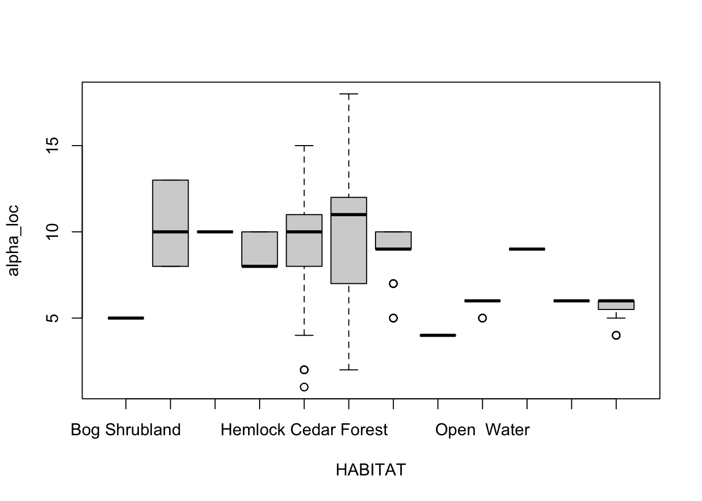
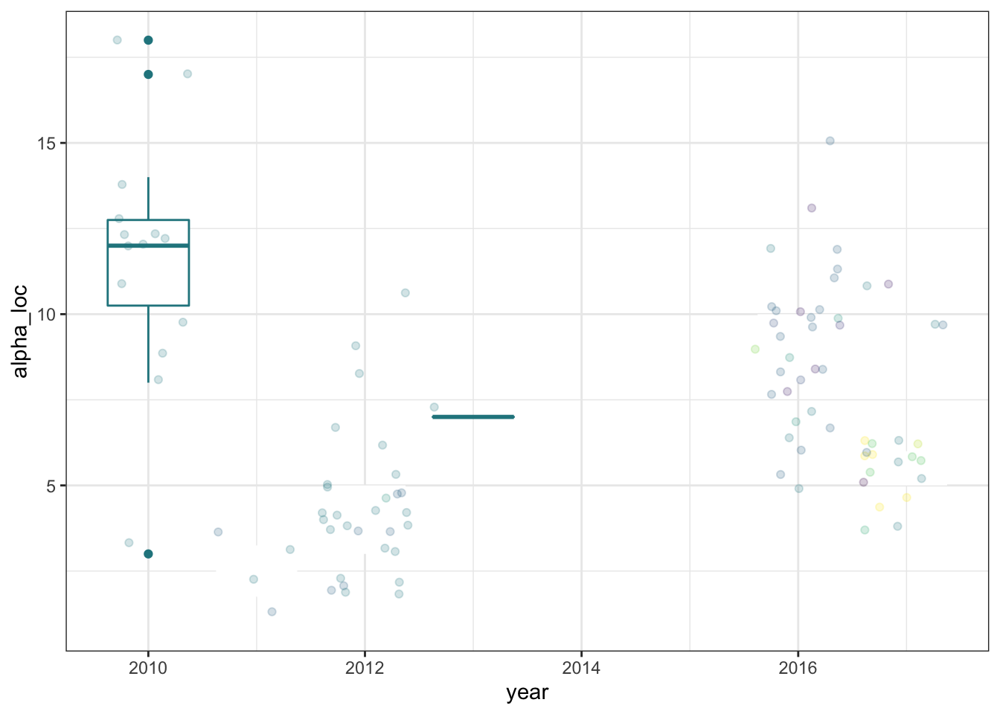

Chapter 2 Songbird community
library(tidyverse)
library(sf)
library(tidyverse)
library(broom.mixed)
library(vegan)
library(lme4)
library(MuMIn)
library(multcomp)
library(MASS)
library(fitdistrplus)
library(bcmaps)
library(bcmapsdata)
library(vegan)
library(plotly)
ghnp <- read_csv("/users/alexandremacphail/gwaii-haanas/allghnp.csv")
ghnp <- ghnp %>%
mutate(passerine = case_when(
species_order == "PASSERIFORMES" ~ "Yes",
TRUE ~ "No"
))
#This is a list of codes used in WildTrax to tag abiotic events like weather, traffic, industrial noise or background noise
abiotic_codes<-c('LIBA','MOBA','HEBA','LITR','MOTR','HETR','LINO','MONO','HENO','LIRA','MORA','HERA','LIWI','MOWI','HEWI','LIAI','MOAI','HEAI','LITN','MOTN','HETN','LIDT','MODT','HEDT','LITF','MOTF','HETF')
#This is the current list of mammals in the acoustic species table in WildTrax
mammals<-c('AMPK','SHEP','RESQ','BEAV','COYT','FISH','GROU','HARE','LECH','MULE','MUSK','OTTE','PORC','REFX','SKNK','WOLF','WTDE','BADG','HOAR','MART','MOOS','CARI','CATT','COWW','DASH','ELKK','GOAT','GRBE','PIGG','RMBH','MOGO','COPI','FRBA','KEMY','LBBA','LEBA','LLBA','PABA','SHBA','SPOB','WSFB','YUMY','CAMY','ESFB','TCBA','WRBA','ERBA','ABBE','BBBA','NLEM','DOGG','TBEB','AGSQ','HOMA','SIVO','EGSQ','WGSQ','MGSQ','ASSS','CHIK','HORS')
amphs<-c('WETO','CATO','GPTO','CSFR','BCFR','WOFR','PLSP','NLFR')
#List of species on Haida Gwaii
hgspp <- read_csv("/users/alexandremacphail/gwaii-haanas/hgspp/avibasehg2.csv") %>% as_tibble()
# Yes means confirmed breeder, migrant or resident
# Rare / Accidental
# Yes_d was changed from Rare / Accdidental -> Yes for TOWA, CHSP, WETA
# Rare / Accidental_m is for NOFU
# COSEWIC and BC Provincial statuses are included2.1 Methods
All community transcription data (all projects, year, etc.) were included in the analysis. In order to determine community stability, each ARU location was included as a random effect to account for non-independence of the sampling units within and between years.
Species richness was used to measure changes in number of species per sampling location per year. We measured the number of distinct species observed over all visits at each location using and using generalized linear models (GLMs) with Gaussian distribution fit the data using a series of forward stepwise model selection. Akaike’s Information Criterion (AIC) was used to select the best model (rank_year + HABITAT + (1 | location_name). We also fit the model to ensure overdispersion of parameters was not violated. Furthemore, a generalized linear hypothesis test (GLHT) using a Tukey single-step multiple comparison procedure and statistical test to find differences in the mean species richness across years.
ghnp_l <- ghnp %>%
dplyr::select(location_name, location_latitude, location_longitude) %>%
distinct() %>%
filter(!is.na(location_latitude))
ecoreg <- ecoregions()
ecoprov <- ecoprovinces()
ecosec <- ecosections()
h0 <- transform_bc_albers(st_as_sf(ghnp_l, coords=c("location_longitude","location_latitude"), crs=4326))
# h0 <- h0 %>%
# mutate(lead = geometry[row_number() + 1],
# dist = st_distance(geometry, lead, by_element = T),) %>%
# dplyr::select(-lead)
h <- st_buffer(h0,150)
ghpc <- transform_bc_albers(st_read("/users/alexandremacphail/gwaii-haanas/gis/GHPlantCommunities_Golumbia01.shp", quiet = TRUE) %>% st_transform(crs=4326) %>% st_make_valid()) %>% na.omit()
# Clean up data from import
g2a <- ghnp %>%
dplyr::select(project_full_nm, species_code, species_english_name, passerine, individual, location_name, location_latitude, location_longitude, recording_date, abundance_type, confidence_type, method_type, user_name) %>%
distinct() %>%
filter(!species_code %in% abiotic_codes,
!species_code %in% mammals,
!species_code %in% amphs,
!grepl('UN^',species_code)) %>%
mutate(year = lubridate::year(recording_date),
hour = lubridate::hour(recording_date),
julian = lubridate::yday(recording_date)) %>%
dplyr::select(location_name, year, recording_date, julian, hour, species_code, species_english_name, passerine, individual, abundance_type)
#Merge species table
g3a <- g2a %>%
dplyr::left_join(dplyr::select(hgspp, species_english_name, on_haida_gwaii), by = c("species_english_name" = "species_english_name")) %>%
filter(passerine == "Yes")
write.csv(g3a, "/users/alexandremacphail/desktop/ghspp.csv")
#Intersect the buffered locations with the plant communities layer to get habitat type
ints <- st_intersection(ghpc, h) %>%
mutate(intersect_area = st_area(.)) %>%
dplyr::select(HABITAT, location_name, intersect_area) %>%
st_drop_geometry() %>%
as_tibble() %>%
mutate(ia = as.integer(intersect_area),
prop = round((ia / 70685.83),5)) %>%
inner_join(., g3a, by = c("location_name" = "location_name")) %>%
dplyr::select(location_name, year, recording_date, HABITAT, prop, species_code, individual, abundance_type, julian, hour) %>%
mutate(individual = case_when(
abundance_type == "TMTC" ~ 4, #Conditional based on spp richness?
abundance_type == "CI 1" ~ 1,
abundance_type == "CI 2" ~ 5,
abundance_type == "CI 3" ~ 20,
TRUE ~ as.numeric(individual))) %>%
dplyr::select(location_name, year, recording_date, HABITAT, prop, julian, hour, species_code, individual) %>%
distinct() %>%
group_by(location_name, year) %>%
mutate(alpha_loc = n_distinct(species_code)) %>%
ungroup()
boxplot(alpha_loc ~ HABITAT, ints)
# GLMs for alpha diversity over years
ints$rank_year <- factor(ints$year) #create a factor for year
ml0 <- glm(alpha_loc ~ 1, data = ints, family = gaussian)
ml1 <- glm(alpha_loc ~ rank_year, data = ints, family = gaussian)
ml2 <- lmer(alpha_loc ~ rank_year + (1|location_name), data = ints) #why doesn't this work? it is because location_name is random effect?
ml3 <- lmer(alpha_loc ~ rank_year + HABITAT + (1|location_name), data = ints)
model.sel(ml0, ml1, ml2, ml3)## Model selection table
## (Int) rnk_yer HAB family class random df logLik AICc delta weight
## ml2 10.710 + gaussian(identity) lmerMod l_n 8 -1600.883 3217.8 0.00 1
## ml3 9.259 + + gaussian(identity) lmerMod l_n 19 -1610.207 3258.7 40.92 0
## ml1 12.830 + gaussian(identity) glm 7 -5278.273 10570.6 7352.77 0
## ml0 9.553 gaussian(identity) glm 2 -6127.490 12259.0 9041.16 0
## Models ranked by AICc(x)
## Random terms:
## l_n = '1 | location_name'#ml2 wins for alpha location richness
#Test for overdispersion
overdisp_fun <- function(model) {
rdf <- df.residual(model)
rp <- residuals(model,type="pearson")
Pearson.chisq <- sum(rp^2)
prat <- Pearson.chisq/rdf
pval <- pchisq(Pearson.chisq, df=rdf, lower.tail=FALSE)
c(chisq=Pearson.chisq,ratio=prat,rdf=rdf,p=pval)
}
overdisp_fun(ml2)## chisq ratio rdf p
## 440.8567136 0.1920944 2295.0000000 1.0000000#Yikes extremely overdispersed
#Fit the overdispersion to the model
tidy_quasi <- function(model, phi=overdisp_fun(model)["ratio"],
conf.level=0.95) {
tt <- (tidy(model, effects="fixed")
%>% mutate(std.error=std.error*sqrt(phi),
statistic=estimate/std.error,
p.value=2*pnorm(abs(statistic), lower.tail=FALSE))
)
return(tt)
}
tq2 <- tidy_quasi(ml2)
#Print the results
tq2## # A tibble: 6 x 6
## effect term estimate std.error statistic p.value
## <chr> <chr> <dbl> <dbl> <dbl> <dbl>
## 1 fixed (Intercept) 10.7 0.194 55.3 0.
## 2 fixed rank_year2011 -6.85 0.0563 -122. 0.
## 3 fixed rank_year2012 -5.76 0.0249 -231. 0.
## 4 fixed rank_year2013 -3.71 1.11 -3.35 8.22e- 4
## 5 fixed rank_year2016 -1.13 0.316 -3.57 3.56e- 4
## 6 fixed rank_year2017 -4.41 0.396 -11.1 7.88e-29 #Run general linear hypothesis testing on the models
lmod2 <- glht(ml2, linfct=mcp(rank_year="Tukey"))
out2 <- summary(lmod2, test = adjusted("none"))
out2##
## Simultaneous Tests for General Linear Hypotheses
##
## Multiple Comparisons of Means: Tukey Contrasts
##
##
## Fit: lmer(formula = alpha_loc ~ rank_year + (1 | location_name), data = ints)
##
## Linear Hypotheses:
## Estimate Std. Error z value Pr(>|z|)
## 2011 - 2010 == 0 -6.84923 0.12838 -53.352 < 2e-16 ***
## 2012 - 2010 == 0 -5.75858 0.05684 -101.321 < 2e-16 ***
## 2013 - 2010 == 0 -3.70873 2.52947 -1.466 0.142592
## 2016 - 2010 == 0 -1.12944 0.72167 -1.565 0.117578
## 2017 - 2010 == 0 -4.40717 0.90253 -4.883 1.04e-06 ***
## 2012 - 2011 == 0 1.09065 0.11802 9.241 < 2e-16 ***
## 2013 - 2011 == 0 3.14050 2.53174 1.240 0.214808
## 2016 - 2011 == 0 5.71979 0.72958 7.840 4.44e-15 ***
## 2017 - 2011 == 0 2.44205 0.90886 2.687 0.007211 **
## 2013 - 2012 == 0 2.04985 2.52932 0.810 0.417690
## 2016 - 2012 == 0 4.62915 0.72115 6.419 1.37e-10 ***
## 2017 - 2012 == 0 1.35141 0.90211 1.498 0.134121
## 2016 - 2013 == 0 2.57929 2.55515 1.009 0.312759
## 2017 - 2013 == 0 -0.69845 2.61200 -0.267 0.789161
## 2017 - 2016 == 0 -3.27774 0.97216 -3.372 0.000747 ***
## ---
## Signif. codes: 0 '***' 0.001 '**' 0.01 '*' 0.05 '.' 0.1 ' ' 1
## (Adjusted p values reported -- none method)#Plot the raw data results
r <- ints %>%
dplyr::select(location_name, year, HABITAT, alpha_loc) %>%
distinct()
#Alpha richness each visits
ggplot(r, aes(x=year, y=alpha_loc, colour=HABITAT)) + geom_boxplot(aes(group=year)) + geom_jitter(alpha = 0.2) + theme_bw() + scale_colour_viridis_d() + theme(legend.position = "none")
#Alpha richness each location
ggplot(r, aes(x=year, y=alpha_loc, fill=HABITAT)) + geom_boxplot(aes(group=year)) + geom_jitter(alpha = 0.2) + theme_bw() + facet_wrap(~HABITAT) + scale_colour_viridis_d() + theme(legend.position = "none")
2.1.1 Effect of proximity to ocean on detection probability
2.1.2 Single-species models
In order to determine if individual species abundances changed over time, a generalized linear mixed model (GLMM) with Poisson distribution was used to fit the data.
ispp <- ints %>%
dplyr::select(location_name, rank_year, HABITAT, alpha_loc, julian, hour, species_code, individual) %>%
group_by(location_name, rank_year, HABITAT, species_code) %>%
mutate(individual = max(individual)) %>%
ungroup() %>%
group_by(species_code) %>%
add_tally(name = 'sppcount') %>%
filter(sppcount > 50)
ggplot(ispp, aes(x=rank_year, y=individual, fill=rank_year)) + geom_boxplot(aes(group = rank_year)) + geom_jitter(alpha = 0.2) + theme_bw() + scale_fill_viridis_d() + facet_wrap(~species_code, scales = "free_x")
ggplot(ispp, aes(x=julian, fill=species_code)) + geom_density(alpha = 0.5) + theme_bw() + scale_fill_viridis_d() + facet_wrap(~species_code, scales = "free_x")
ggplot(ispp, aes(x=hour, fill=species_code)) + geom_density(alpha = 0.5) + theme_bw() + scale_fill_viridis_d() + facet_wrap(~species_code, scales = "free_x")
m0 <- glm(individual ~ 1, data = ispp, family = poisson)
m1 <- glm(individual ~ rank_year, data = ispp, family = poisson)
m2 <- glm(individual ~ rank_year + HABITAT, data = ispp, family = poisson)
m3 <- glm(individual ~ rank_year * HABITAT, data = ispp, family = poisson)
m4 <- glmer(individual ~ rank_year + HABITAT + (1|location_name), data = ispp, family = poisson)## Warning in checkConv(attr(opt, "derivs"), opt$par, ctrl = control$checkConv, : Model failed to
## converge with max|grad| = 0.00359839 (tol = 0.002, component 1)## fixed-effect model matrix is rank deficient so dropping 50 columns / coefficients## Warning in checkConv(attr(opt, "derivs"), opt$par, ctrl = control$checkConv, : Model failed to
## converge with max|grad| = 0.00335193 (tol = 0.002, component 1)## Warning in theta.ml(Y, mu, weights = object@resp$weights, limit = limit, : iteration limit reached## Model selection table
## (Int) rnk_yer HAB HAB:rnk_yer family class random df logLik
## m1nb 0.7623 + Negative Binomial(281608.6,log) glmerMod l_n 8 -2918.123
## m4 0.1498 + + poisson(log) glmerMod l_n 18 -2915.919
## m1 0.7850 + poisson(log) glm 6 -2929.872
## m5 0.1556 + + + poisson(log) glmerMod l_n 23 -2913.865
## m2 0.1521 + + poisson(log) glm 17 -2923.600
## m3 0.1525 + + + poisson(log) glm 22 -2919.627
## m0 0.6557 poisson(log) glm 1 -2951.354
## AICc delta weight
## m1nb 5852.3 0.00 1
## m4 5868.2 15.86 0
## m1 5871.8 19.47 0
## m5 5874.3 21.96 0
## m2 5881.5 29.19 0
## m3 5883.8 31.44 0
## m0 5904.7 52.39 0
## Models ranked by AICc(x)
## Random terms:
## l_n = '1 | location_name'2.1.3 Community structure
Community composition between habitat types was tested using a redundancy analysis (RDA). The RDA summarizes the variation in a set of response variables, here species presence and abundance, and determines the amount of variation in species abundance data that is explained by environmental variables, The data is then shown in the parsimonious multivariate space to visually depict similarities and shifts in community composition across habitat types. Results from the RDA were presented as an ordination with 67% confidence ellipses to show where the majority of the location of each habitat type were located in two-dimensional space.
#Setup the community matrix with the variables of interest
i2 <- ints %>%
dplyr::select(location_name, HABITAT, prop, species_code, individual, recording_date) %>%
distinct() %>%
mutate(year = lubridate::year(recording_date)) %>%
group_by(location_name, year, HABITAT, prop, species_code) %>%
mutate(individual = max(individual)) %>%
ungroup() %>%
group_by(location_name, year) %>%
mutate(alpha_loc = n_distinct(species_code)) %>%
ungroup() %>%
distinct() %>%
pivot_wider(names_from = species_code, values_from = individual, values_fill = 0) %>%
as_tibble() %>%
mutate_if(is.integer, as.numeric)
multi_type <- i2 %>%
dplyr::select(location_name, HABITAT, prop, recording_date, alpha_loc, year) %>%
distinct()
write.csv(i2,"/users/alexandremacphail/desktop/ghwide.csv")
write.csv(multi_type,"/users/alexandremacphail/desktop/ghwideplus.csv")
#Let's do a quick species accumulation curve
plot(vegan::specaccum(i2[,-c(1:6)], method="random"))#Run the ordination
t3 <- vegan::rda(i2[, -c(1:6)] ~ HABITAT, data = multi_type)
#The stepwise model
vegan::ordistep(t3, permutations = 999)##
## Start: i2[, -c(1:6)] ~ HABITAT
##
## Df AIC F Pr(>F)
## - HABITAT 11 1053.1 5.6189 0.001 ***
## ---
## Signif. codes: 0 '***' 0.001 '**' 0.01 '*' 0.05 '.' 0.1 ' ' 1## Call: rda(formula = i2[, -c(1:6)] ~ HABITAT, data = multi_type)
##
## Inertia Proportion Rank
## Total 8.6367 1.0000
## Constrained 0.9926 0.1149 11
## Unconstrained 7.6441 0.8851 44
## Inertia is variance
##
## Eigenvalues for constrained axes:
## RDA1 RDA2 RDA3 RDA4 RDA5 RDA6 RDA7 RDA8 RDA9 RDA10 RDA11
## 0.5755 0.2910 0.0587 0.0291 0.0129 0.0117 0.0078 0.0037 0.0016 0.0005 0.0002
##
## Eigenvalues for unconstrained axes:
## PC1 PC2 PC3 PC4 PC5 PC6 PC7 PC8
## 2.0212 1.2389 0.7934 0.5818 0.4652 0.4369 0.3935 0.3351
## (Showing 8 of 44 unconstrained eigenvalues)#Set things up for graphics
t3scores <- scores(t3, display = "sites") %>%
as.data.frame() %>%
rownames_to_column("site") %>%
bind_cols(., multi_type)
t3vect <- scores(t3, display = "species") %>%
as.data.frame()
plot_RDA <- ggplot(data = t3scores, aes(x = RDA1, y = RDA2)) +
geom_point(data = t3scores,
aes(x = RDA1, y = RDA2, colour = HABITAT),
alpha = 0.6) +
stat_ellipse(
data = t3scores,
aes(colour = HABITAT),
linetype = 4,
type = 'norm',
level = 0.67
) +
scale_colour_viridis_d(guide = guide_legend()) +
geom_vline(xintercept = c(0),
color = "#A19E99",
linetype = 2) +
geom_hline(yintercept = c(0),
color = "#A19E99",
linetype = 2) +
geom_segment(
data = t3vect,
aes(
x = 0,
y = 0,
xend = RDA1,
yend = RDA2
),
arrow = arrow(length = unit(0.2, "cm")),
alpha = 0.2
) +
geom_text(data = t3vect, aes(
x = RDA1,
y = RDA2,
label = rownames(t3vect),
alpha = 0.2
)) +
theme_bw() +
labs(x = paste0("CA1 ", round(t3$CA$eig[[1]], 2), '%'),
y = paste0("CA2 ", round(t3$CA$eig[[2]], 2), '%')) +
ggtitle("Haida Gwaii species communities")
#Plot the RDA
rda <- ggplotly(plot_RDA)
htmlwidgets::saveWidget(rda, "/users/alexandremacphail/gwaii-haanas/rda.html")2.2 Results
2.2.1 Community stability
Here we will report on the community stability based on the final results.
2.2.2 Monitoring program
Here we will make recommendations on employing a robust, long-term monitoring program to assess forest health and songbirds.
- Sample size
- Time frame
- Frequency
- Report metric
- Abundance
- Richness
- ##Occupancy##